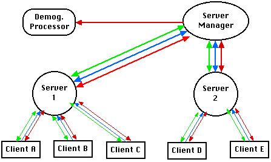
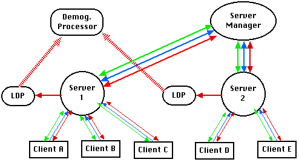

98/08/19 Karl
Update History
The ComCom system is intended to share "location" information amongst ComCom users via their EC Identities (hereafter ECIDs). The location information will include such data as how many (and which) ECID users are looking at a specific URL or are in a particular Palace (room?). This could easily be extended to include the number of (and which) ECID users in a specified MUDD or MOO, along with other such useful information. The ComCom server at its simplest is a message fan-out mechanism for forwarding this location information to ComCom clients.
Using a particular ECID, a ComCom client connects to a ComCom server : Multiple ECIDs may be possible on the client's machine, and ComCom clients may deal with multiple ECIDs and may even connect with a server using more than one ECID at a time, but there is only one "connection" per ECID. Upon a successful connection, the client indicates which sort, if any, of location information it is interested in (interests) and what other ECIDs have permission to receive what subsets of the client's location information (permissions).
The ComCom server receives interest and permission data from ComCom clients, and correlates said data into what are, in effect, routing tables. The server also receives location information from connected clients and routes this information to any clients which have expressed an interest in it, and have been granted permission to see it.
The ComCom server will be a Java application consisting of several processes, either on one machine or spread across several. First, of course, are the ComCom server processes, the ones which actually receive and fan out location messages from ComCom clients. There will also be a ComCom server manager, which will keep track of the loads on the various servers it knows about and assign new clients to the server with the lowest load. Finally, there will be a Demographic processor, which will receive and store location information and ECIDs for us to sell later.
At this point in the design, there are many "connections" between the various processes, whether these are actual direct connections or just knowledge of how to send messages to a specific entity. The server manager knows where all of the servers are. The various servers share location, login/logout, interests and permissions information with each other. Also, all of the servers send location information to the Demographics processor. As the server manager already knows where all of the servers are and is a natural central processing point anyway, inter-server messages could be routed through the server manager. And, as all servers are communicating with the server manager anyway, they could route all of their Demographic messages through it. For N servers, this eliminate N + (N * (N-1))/2 connections (N connections to the Demographics processor and (N * (N-1))/2 connections to the other servers). Admittedly, this would also increase the amount of message traffic through the server manager.
As far as the demographic data goes, it could be collected locally on the server's machines (into a Local Demographic Processor or LDP) and downloaded to a central point periodically. This would eliminate the constant low-bandwidth red traffic in favor of periodic high-bandwidth dumps from the servers to the central processing point:
The first approach with lots of connections is probably the best one as the load on the server manager would be extreme, which is the point of load balancing over multiple servers. Also, the overall amount of traffic increases with approach number two or three (according to some rough calculations I did on the back of an envelope :-). If we decide that the demographic data is not really time sensitive and can be saved locally on the server machines and then downloaded occasionally to a central Demographics Processor, then the final system will probably look something like this:
In some cases messages may be sent as "bundles" in one messages. This is particularly likely for clients behind firewalls who cannot broadcast individual UDP location messages.
Important information in ComCom is transmitted over authenticated TCP connections, while less vital data is transmitted via authenticated UDP connections. The initial log in sequences between client and manager and client and server are done via TCP, both to ensure the login to the system and to protect and ensure the transmission of the interest/permission data and the secret numbers. Any time a client wishes to update its interest/permission data or is logging out, a TCP connection is used. The connection between the manager and a server is used to keep track of server load by counting login/logout messages, and so needs to be TCP. I am assuming at this point that the servers are interconnected via TCP for transmission of important permission data anyway, so sending the login/logout and location data over the same connection seems appropriate. Whether or not whatever connections we have to a Demographics Processor are TCP or UDP is open to debate. If it is important enough for us to make money off of it, then maybe TCP is best.
The greatest amount of traffic is going to be generated by location data from the clients to the servers, and the fanning out of such data as well as login/logout messages from the servers to the clients and this information, while interesting, is not critical to the system as a whole, and will be done via UDP. If we occasionally lose a packet about what Palace a client is visiting, it's not the end of the world. And if the occasional client thinks someone is still logged in when they actually aren't...oh well.
There follows a description of the procedure of logging into the ComCom system of federated servers and routing location information; this description is in terms of the message traffic involved in the various transactions and the some of the processing performed in response to the messages.
In this examples there is a ComCom Server Manager, Servers One, Two and Three, and Clients A through H. I have left out the Demographics Processor as unnecessary for this example. Clients A through G are already conected with the following interests and permissions,
NOTE: The colors of the arrows on the messages in this diagram are intended to reflect the colors indicating type of data in the architecture diagrams:
NOTE 2: I am using a simplified method of interests and permissions in this example: 1) An interested party is watching for all activity rather than expressing interest in logins/logouts and locations separately, and 2) location is used generally rather than being specified by URL, Palace or other type of location.

This example covers most (if not all) of the types of message traffic which will exist in the ComCom system.
A client's machine may crash for some reason, or they may shut it down without sending a logout message. This would be indistinguishable from the fact that the client just hasn't changed its browser or Palace location for some time. Because whether or not a client is logged in affects load balancing and the size of the routing tables on the servers, this knowledge is important to how well the ComCom system runs.
Bob has suggested a heartbeat sort of timeout scheme for ComCom clients. The server will keep track of the last time a client "pinged", and if a certain (user-defined) amount of time has passed, a logout message will be circulated for that client and the ECID for that client will be purged from the server's tables. This is to prevent the server from sending large amounts of unnecessary UDP packets to someone who has, for instance, shut down their computer for the night.
The occasional "ping" message from the will also be useful for notifying new clients of the status of someone they are interested in. Say Alice is logged in to server A. Bob then logs into server B, which has no data for Alice because none of its clients are interested in her. Bob will receive no information on Alice's login status until she changes a location (which will cause the Bob's client's "online" flag for Alice to be set to true), or until she sends out a "ping" message, which will be fanned out to interested clients as a "login".
At this point, it appears as if a ComCom server will need four tables for routing information. The first two, informational tables used for building the routing tables, will be indexed by ECID. For the first table of all of the ECIDs this server knows about, each record will contain:
The second is a table of this server's clients, and the records will contain:
The third, a location routing table, will be indexed by location name (probably a String) and each record will contain:
The fourth, an ECID routing table, will be also be indexed by ECID and each record will contain:
Example: Assume there are three servers, One, Two and Three. Currently there are no clients connected. Bob comes along and logs into One. He tells One that he is interested in Alice's logins, Ted's URLs, Bart's logins and Palaces, "www.foo.com" and "www.BarPalace.com:322", and he gives permission for Ted to see when he is logged on, and for Alice to see what URLs and Palaces he visits. He also sends his IP address and port number for receiving UDP packets. One sends back its address and port number, along with the secret numbers it came up with for encoding/ decoding their future UDP conversations. One stores Bob's interest, permission, secret numbers and connection address in its "CLIENT" table, and sets the "last contact" time, and sends Bob's permissions to Two and Three, who store the info into their "KNOWN ECIDS" table, where Bob's last location fields will be empty. One also sends a "Bob has logged in" message to the server manager. One's "LOCATION ROUTING" table has 2 entries, while the "ECID ROUTING" table is empty as there's only one ECID in the system (although Bob could actually register an interest in himself, if he really wanted to). So Bob's tables look like:
| KNOWN ECIDS | ||||
|---|---|---|---|---|
| Login | URL | Palace | ||
| Bob | Permissions | Ted | Alice | Alice |
| Locations | ||||
| CLIENT ECIDS | |||||
|---|---|---|---|---|---|
| Login | URL | Palace | Locations | ||
| Bob | Interests | Alice, Bart | Ted | Bart | www.foo.com, www.BarPalace.com:322 |
| Last Contact | 10:43:36 AM 9/9/99 | ||||
| LOCATION ROUTING | Count | |
|---|---|---|
| www.BarPalace.com:322 | Bob | 0 |
| www.foo.com | Bob | 0 |
Now Bob opens his browser and goes to www.communities.com. This is sent to One as a location message. One check its "LOCATION ROUTING" table for www.communities.com but finds no match, then checks its "ECID ROUTING" table for Bob, and finds no match there either. Bob then enters good old BarPalace. One gets this location message and finds that Bob is interested in this location. One increments BarPalace's counter and sends a UDP message to Bob that there is 1 ECID "at" www.BarPalace.com:322. In the interim, One has forwarded these two location message onto Two and Three, who add this info to their "KNOWN ECIDS" tables. Note that all "KNOWN ECIDS" tables end up being exactly the same. Then One updates its tables:
| KNOWN ECIDS | ||||
|---|---|---|---|---|
| Login | URL | Palace | ||
| Bob | Permissions | Ted | Alice | Alice |
| Locations | www.communities.com | www.BarPalace.com:322 | ||
| CLIENT ECIDS | |||||
|---|---|---|---|---|---|
| Login | URL | Palace | Locations | ||
| Bob | Interests | Alice, Bart | Ted | Bart | www.foo.com, www.BarPalace.com:322 |
| Last Contact | 10:48:55 AM 9/9/99 | ||||
| LOCATION ROUTING | Count | |
|---|---|---|
| www.BarPalace.com:322 | Bob | 1 |
| www.foo.com | Bob | 0 |
Note that there are now "URL/Location" and "Palace/Location" entries in the "KNOWN ECIDS" table for Bob, his "Last contact" field in the "CLIENT ECIDS" table has been updated, and there is 1 ECID at BarPalace in the "LOCATION ROUTING" table.
Now Ted comes along and, for some reason known only to the server manager, is told to log into One. He does so with interests in enerything that Bob, Alice, and Bart do, and in "www.foo.com" and "www.communities.com". He gives Bob permission to see anything he does. One sends Ted's permissions to Two and Three, who store the info into their "KNOWN ECIDS" table, where Ted's last location fields will be empty, adds this information to its tables and ends up with:
| KNOWN ECIDS | ||||
|---|---|---|---|---|
| Login | URL | Palace | ||
| Bob | Permissions | Ted | Alice | Alice |
| Locations | www.communities.com | www.BarPalace.com:322 | ||
| Ted | Permissions | Bob | Bob | Bob |
| Locations | ||||
| CLIENT ECIDS | |||||
|---|---|---|---|---|---|
| Login | URL | Palace | Locations | ||
| Bob | Interests | Alice, Bart | Ted | Bart | www.foo.com, www.BarPalace.com:322 |
| Last Contact | 10:48:55 AM 9/9/99 | ||||
| Ted | Interests | Alice, Bart, Bob | Alice, Bart, Bob | Alice, Bart, Bob | www.foo.com, www.communities.com |
| Last Contact | 10:53:17 AM 9/9/99 | ||||
| LOCATION ROUTING | Count | |
|---|---|---|
| www.BarPalace.com:322 | Bob | 1 |
| www.communities.com | Ted | 0 |
| www.foo.com | Bob | 0 |
| ECID ROUTING | ||||
|---|---|---|---|---|
| Login | URL | Palace | ||
| Bob | Ted | |||
| Ted | Bob | |||
Now One goes through Ted's location interests and correlates them with its "LOCATION TABLE" and sends a UDP message to Ted saying that there are no ECIDs at either www.foo.com or www.communities.com. Next One checks Ted's Login, URL and Palace interests against the permissions in its "KNOWN ECIDS" table. One finds no Alice or Bart, but it does find a Bob. Bob has granted Ted permission to see his logins, so Ted is told that Bob is logged in. Ted has asked for permission on Bob's URLs and Palaces, but Bob has not granted his permission, so Ted is not told Bob's current locations.
KSS--Do:
POSSIBLE PROBLEM: The "KNOWN ECID" tables on all of the servers are exactly the same and contain information on every ECID logged into the ComCom system, and are therefore potentially huge. This information is needed by all of the servers, however: The PERMISSIONS so that the servers can correlate them with their clients' INTERESTS to build routing tables, and the LAST LOCATIONS so that the servers can give an accurate COUNT of the population of specific locations to their clients, and give current locations/login status of ECIDs. Without the LAST LOCATION info, a server would only be able to tell its clients how many CLIENTS ON THIS SERVER are at a specific location.
POSSIBLE SOLUTION: The "KNOWN ECID" tables could be kept on the server manager. As this information is really only needed when a client logs in, a server could ask the manager to build the new routing entries for the entering client and for the last locations of ECIDs in which the entering client has interest.
The server manager tells clients which server to log into based on the load on the various servers. This "load" can be determined in several ways. The simplest is just the number of clients the server has: As most of the load on a server is probably going to be the message fan out, the number of clients determines the maximum fan out a server will ever need to do for one message. Therefore, the server with the most clients is the most loaded. This is a very simplistic and probably fallacious approach.
The second method would deal with the number and length of entries in the routing tables: Two servers may have the same number of clients, but one set may be much more active, and therefore the entries in the more active server's tables will be more numerous and have longer ECID lists in them. As an extreme example, server A has 50 clients, only half of which care about anything at all, and that is just what 1 other ECID is doing, and maybe the other half are watching the traffic on www.communities.com. The location routing table would have one entry with a fan out list of 25. The ECID routing table would have 25 entries with lists of length 1. Now say server B has 50 clients all of whom care about what the other 49 are doing, and all are interested in 10 Web sits and palaces. Server B's location routing table has 10 entries with lists of length 50, and its ECID routing table has 50 entries, each with a fan out list of 49. B is "obviously" more loaded than A, even though they both have the same number of clients.
But wait, I haven't even warmed up yet. Method 2 is not as simplistic as 1, but it still has its problems. Suppose that www.communities.com gets a hit every second. Server A would be fanning out a location traffic message to 25 clients every second or so. Now suppose that the clients on server B never do anything but watch, and the 10 sites they are interested in are something like www.porkbellypricesinszechuanprovince.com and //PalaceGingrich.washingtonDC.gov:666, which hardly get any traffic; server B's fan outs will be pretty much nonexistent even though its table entries are more numerous and longer than A's. In this third case, the actual traffic would need to be measured and communicated to the server manager and the loads calculated over a period of time.
Obviously method 1 is the simplest implementation and probably acceptable for the short term. New messages types will be needed for 2 and 3 to communicate table and list sizes or traffic volume. Method 2 offers a simple comparison of numbers for determining load, while method 3, the best solution for determining actual load, will require collection of traffic statistics over time--However, the server manager doesn't do very much except tell new clients whic server to log into, so the added processing would probably not be detrimental to its overall performance.
Place tracking is the process of letting clients interested in a specific URL, Palace (or other type of location) know the current number of ECIDs which are currently "at" the location. When a ComCom client sends a location change, its server will check the client's last location, decrement the count for that location, then change the last location to the current one and increment the counter for the new location. The current count for both locations will then be fanned out to any clients interested in this data.
Note that this would be a bad scheme for a popular location which could generate a tremendous amount of UDP traffic. Say that there are 5,000 ComCom users which heve registered interest in "palace://BobsPalace.communities.com:7565" with their server, and that many of these users visit the place several times a day. Every time someone enters or leaves this Palace, the server must fan out 5,000 messages. For this reason, we should implement a strategy for filtering fanouts based on the population "at" locations. It might be something like:
Randy's Population Ticker Product: EC could provide an HTML interface/plug-in like a ticker which could accept population messages and display the data on Web pages.
Jeff, Christina, and Randy particularly should review this section and let Karl (and the others) know what to add.
One of our key areas for revenue potential for ComCom is the collection of user navigation information: How many and what sort of people are visiting what locations.
As location messages are received by ComCom servers from their clients, these messages will be collected in a database. These messages include the name of the location and the ECID of the user who went there. The master database(s) will probably be at a specific location(s), and the ComCom servers will either route the location messages directly to the master(s) to a local (on the same machine as the server) database, which could then be periodically uploaded to the master(s). The database could time stamp the messages if time-related demographics are needer.
Once data has been collected in a master database, a Demographics Processor can then analyze the data for particular locations by using the ECIDs and asking the Directory Server for demographic profile information about the ECIDs. I believe that it is part of the overall ComCom design for ComCom clients to send profile information (personal, friends' and public) to the Directory Server at login time (Jeff, Bob?). The master Demographics Processor could then determine such information as "How many people ages 32-67 visited www.barbie.com in the 3rd quarter of 1999".
ComCom clients behind firewalls cannot receive UDP location updates from a server, and in some cases cannot send UDP packets either. Such clients must communicate via TCP for at least part of the interaction: If UDP transmission is allowed, the client can send regular UDP location messages; if not, then these messages must be sent via TCP. The client must let the server know its firewall status at login so that the server won't bother fanning to this client.
The existence of firewalls is one of the reasons for keeping the "last location" data for the various ECIDs: A client behind a firewall will have to connect via TCP every X minutes to download the interest data it has requested from the server which it cannot receive through the regular UDP fan out. The server can then build a message of the last locations for all of the ECIDs in which the client has expressed an interest and then send that message.
If UDP transmission is not an option, the client will also need to send its location messages via TCP. This could be done as a series of individual messages, or we could implement a "bundling" protocol for sending several similar messages in one bunch. The server must then have the knowledge of how to break up such bundles into distinct messages.
While discussing the possibliy of limiting the length of specific location interest lists to a manageable number (say 512) to prevent huge fanouts, Bob suggested a mini-server with an ECID of it's own. Users could buy the server, set up tables for routing to their 600 closest friends and then register the ECID of the mini-server with interests with a ComCom server. Then, when the server receives a tagged location message, it would send one message to the mini-server's ECID address, and that server would be responsible for the 600 message fanout.
Whether or not this is a viable product, the concept of a user registering a group ECID with a ComCom server and then doing something group-oriented with the single message the server would send to it is an interesting one...
98/08/12 Karl:
This is no longer an issue: Clients tell the server their
permissions over a secure connection, so the security of the connection
provides the protection that cookies were supposed to.
ComCom "Cookies":
As the ComCom
server talks only with ComCom clients, it has no access to the authentication
system provided by ECID. However, the server is granting capabilities to
various clients to monitor other clients. In the background this is actually
done by ECID to ECID communication which the ComCom server knows nothing
about
When a Bob wishes to watch what URLs Alice is visiting, Bob's ComCom client asks his local ECID daemon for the capability. Bob's daemon uses Alice's ECID to talk to the appropriate daemon on the Alice's machine to request the capability. Alice's daemon checks with Alice's ComCom client to see if Alice has (or will) granted Bob such a capability through the ComCom client UI (by checking boxes, probably). If she has, then Alice's ECID daemon tells Bob's ECID daemon to go ahead. Bob's ComCom client then tells the ComCom server that he has the capability to see what URLs Alice is visiting.
As you can see, the ComCom server knows nothing about the above transaction and just gets some message from Bob saying "I can do this," and, as the server communicates only with ComCom clients, there is no way it to check with any ECID daemon for such a claim's validity. Randy's idea is for ComCom servers to mint magic cookies for each ECID upon first time connection. Thus, when Alice's ComCom client is asked by its ECID daemon if Bob can watch URLs, it can pass back its cookie as part of the "OK" message. This cookie will get back to Bob's ComCom client, which can include it as part of its "I can do this" message, which the ComCom server can then check against the cookie which it minted for Alice in the first place.
Option: As I wrote this, it seemed there must be an easier way. Or maybe I'm just being too simplistic. The ComCom server only talks with ComCom clients. Fair enough. How about this: When Bob's client says "I want to see what URLs Alice is visiting," why doesn't the server just ask Alice's client if this is okay? If her client isn't up, the request will have to be queued, so Bob can't do anything for now, but this is true in the ECID to ECID scheme above too. We've already gone to the trouble of building a secure (for some definition of the word :-) connection to both Bob and Alice, so why won't this simpler scheme work? [True, any application can mint a capability. But ECID is the center of inter-application traffic and is the only application that can control which applications get which messages/capabilities. ComCom can and will make it's own capabilities (such as the shared secret for validating the UDP traffic), but its capabilities aren't controlled/accessible by ECID, and therefore aren't shared with other applications. So the question is: are the monitoring capabilities granted by ECID to ComCom 100% unique to ComCom? I think the answer is clearly no: The first two Palace Pager Plugin capability requests I think are potentially generic to all apps: "Can See Where You Are" and "Can Send Telepathy To Me". These are in common with ComCom, and may be requested by other applications, like The Palace.]
TBD.